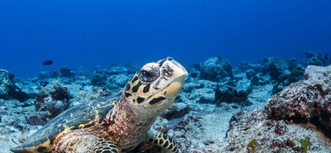

Hawksbill Turtle
Population: Approximately 20,000
Threats: Hawksbill turtles are at risk of extinction due to the loss of their habitat, costal development, ocean pollution and excessive egg collection.
Location: Tropical reefs of the Indian, Pacific, and Atlantic Oceans
About: Hawksbill Turtles have narrow pointed beaks. Their diet consists of sponges, anemones and jellyfish.